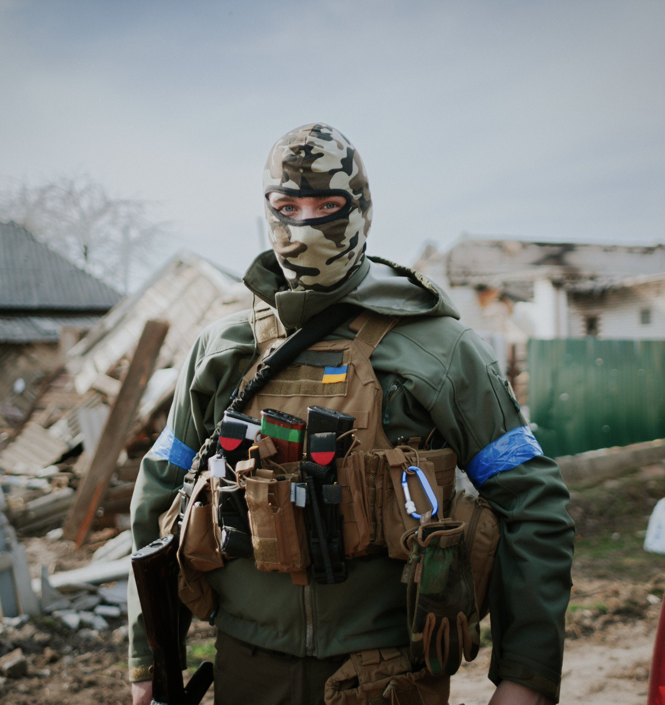

After returning from the war, soldiers can progress into a condition known as post-traumatic stress disorder over time. PTSD is a severe mental issue that often leads to depression and suicidal thoughts through vivid nightmares. Severe anxiety, flashbacks, and nightmares are some of the symptoms that sufferers may encounter. There needs to be more funding for the mental health programs for the military personnel because the lack of mental health services for veterans with PTSD and depression contributes to substance abuse and high suicide rates. 57 percent of ukrainian veterans need support of psychologists. Learn more about PTSD across soldiers in UKRAINE.
